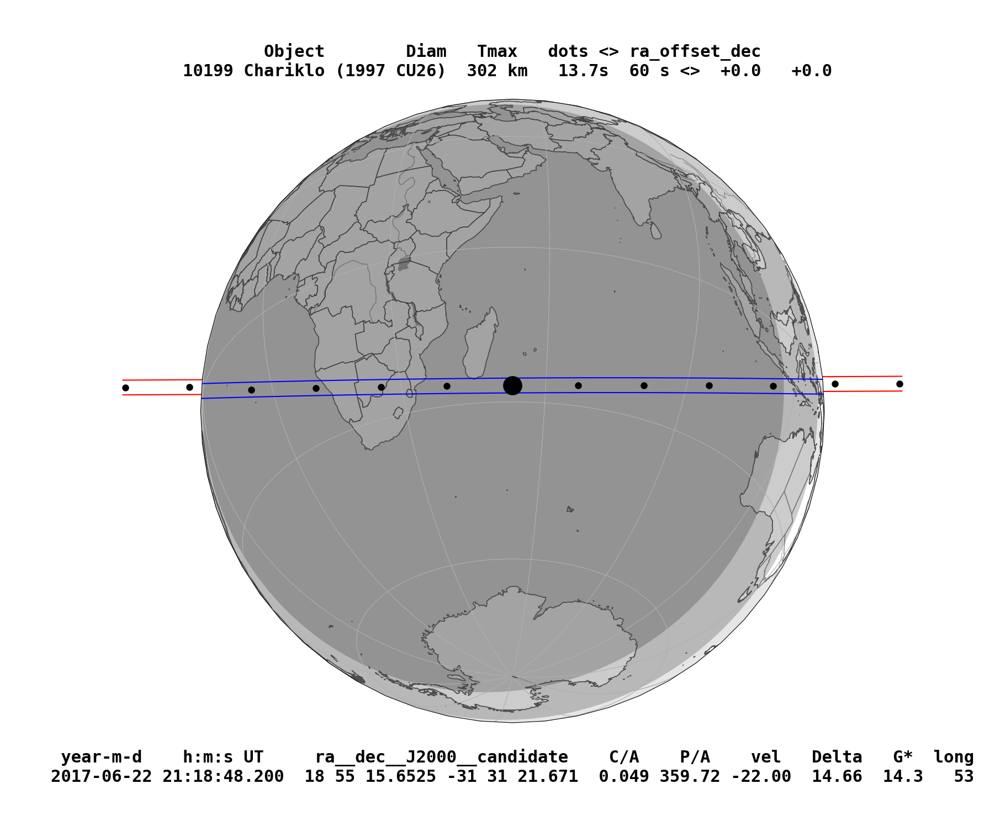

SORA Getting Started¶
[1]:
## SORA package
from sora import Occultation, Body, Star, LightCurve, Observer
from sora.prediction import prediction
from sora.extra import draw_ellipse
## Other main packages
from astropy.time import Time
import astropy.units as u
## Usual packages
import numpy as np
import matplotlib.pylab as pl
import os
SORA version: 0.2dev
Before analysing stellar occultations data, let’s predict them.
To predict stellar occultation we needs the intended Solar System body ephemeris and a time window.
[5]:
# First, let's consider an Solar System Body
chariklo = Body(name='Chariklo',
ephem=['input/bsp/Chariklo.bsp', 'input/bsp/de438_small.bsp'])
print(chariklo)
Obtaining data for Chariklo from SBDB
###############################################################################
10199 Chariklo (1997 CU26)
###############################################################################
Object Orbital Class: Centaur
Spectral Type:
SMASS: D [Reference: EAR-A-5-DDR-TAXONOMY-V4.0]
Relatively featureless spectrum with very steep red slope.
Discovered 1997-Feb-15 by Spacewatch at Kitt Peak
Physical parameters:
Diameter:
302 +/- 30 km
Reference: Earth, Moon, and Planets, v. 89, Issue 1, p. 117-134 (2002),
Rotation:
7.004 +/- 0 h
Reference: LCDB (Rev. 2020-October); Warner et al., 2009, [Result based on less than full coverage, so that the period may be wrong by 30 percent or so.] REFERENCE LIST:[Fornasier, S.; Lazzaro, D.; Alvarez-Candal, A.; Snodgrass, C.; et al. (2014) Astron. Astrophys. 568, L11.], [Leiva, R.; Sicardy, B.; Camargo, J.I.B.; Desmars, J.; et al. (2017) Astron. J. 154, A159.]
Absolute Magnitude:
6.7 +/- 0 mag
Reference: MPO452314,
Albedo:
0.045 +/- 0.01
Reference: Earth, Moon, and Planets, v. 89, Issue 1, p. 117-134 (2002),
----------- Ephemeris -----------
EphemKernel: CHARIKLO/DE438_SMALL (SPKID=2010199)
Ephem Error: RA*cosDEC: 0.000 arcsec; DEC: 0.000 arcsec
Offset applied: RA*cosDEC: 0.0000 arcsec; DEC: 0.0000 arcsec
[6]:
pred = prediction(body=chariklo, time_beg='2017-06-20',time_end='2017-06-27',mag_lim=16)
pred
Ephemeris was split in 1 parts for better search of stars
Searching occultations in part 1/1
Generating Ephemeris between 2017-06-20 00:00:00.000 and 2017-06-26 23:59:00.000 ...
Downloading stars ...
5 Gaia-EDR3 stars downloaded
Identifying occultations ...
2 occultations found.
[6]:
| Epoch | ICRS Star Coord at Epoch | Geocentric Object Position | C/A | P/A | Vel | Dist | G | G* | long | loct | M-G-T | S-G-T | Gaia-EDR3 Source ID |
|---|---|---|---|---|---|---|---|---|---|---|---|---|---|
| arcsec | deg | km / s | AU | mag | mag | deg | hh:mm | deg | deg | ||||
| object | object | object | float64 | float64 | float64 | float64 | float64 | float64 | float64 | str5 | float64 | float64 | int64 |
| 2017-06-21 09:57:43.420 | 18 55 36.17454 -31 31 19.03261 | 18 55 36.17500 -31 31 19.60516 | 0.573 | 179.41 | -21.84 | 14.663 | 15.254 | 15.350 | 225 | 00:56 | 128 | 165 | 6760228702284187264 |
| 2017-06-22 21:18:48.200 | 18 55 15.65251 -31 31 21.67062 | 18 55 15.65249 -31 31 21.62190 | 0.049 | 359.72 | -22.00 | 14.659 | 14.224 | 14.327 | 53 | 00:50 | 149 | 166 | 6760223758801661440 |
[7]:
## ploting the occultation map
pred['2017-06-22 21:18'].plot_occ_map(nameimg='figures/pred_map')
figures/pred_map.png generated

Now, let’s start instantiating the Occultation
An occultation is defined by the occulting body, the occulted star, and the time of the occultation
[8]:
Occultation?
Init signature: Occultation(star, body=None, ephem=None, time=None)
Docstring:
Does the reduction of the occultation
Init docstring:
Instantiates the Occultation object.
Parameters:
star (Star, str): The coordinate of the star in the same reference frame as the ephemeris.
It must be a Star object or a string with the coordinates of the object to search on
Vizier (required).
body* (Body, str): Object that will occult the star. It must be a Body object or its
name to search in the Small Body Database.
ephem* (Ephem): object ephemeris. It must be an Ephemeris object or a list .
time (str, Time): Reference time of the occultation.
Time does not need to be exact, but needs to be within approximately 50 minutes
of the occultation closest approach to calculate occultation parameters (required).
* When instantiating with "body" and "ephem", the user may define the Occultation in 3 ways:
- With "body" and "ephem".
- With only "body". In this case, the "body" parameter must be a Body object and have an
ephemeris associated (see Body documentation).
- With only "ephem". In this case, the "ephem" parameter must be one of the Ephem Classes
and have a name (see Ephem documentation) to search for the body in the Small Body Database.
File: ~/anaconda3/lib/python3.8/site-packages/sora/occultation/core.py
Type: type
Subclasses:
[9]:
star_occ = Star(coord='18 55 15.65250 -31 31 21.67051')
#star_occ = Star(code='6760223758801661440')
print(star_occ)
Downloading star parameters from I/350/gaiaedr3
1 Gaia-EDR3 star found G=14.223702
star coordinate at J2016.0: RA=18h55m15.65210s +/- 0.0197 mas, DEC=-31d31m21.6676s +/- 0.018 mas
Downloading star parameters from I/297/out
Gaia-EDR3 star Source ID: 6760223758801661440
ICRS star coordinate at J2016.0:
RA=18h55m15.65210s +/- 0.0197 mas, DEC=-31d31m21.6676s +/- 0.0180 mas
pmRA=3.556 +/- 0.025 mas/yr, pmDEC=-2.050 +/- 0.020 mas/yr
Plx=0.2121 +/- 0.0228 mas, Rad. Vel.=0.00 +/- 0.00 km/s
Magnitudes: G: 14.224, B: 14.320, V: 13.530, R: 14.180, J: 12.395, H: 11.781,
K: 11.627
Apparent diameter from Kervella et. al (2004):
V: 0.0216 mas, B: 0.0216 mas
Apparent diameter from van Belle (1999):
sg: B: 0.0238 mas, V: 0.0244 mas
ms: B: 0.0261 mas, V: 0.0198 mas
vs: B: 0.0350 mas, V: 0.0315 mas
[10]:
occ = Occultation(star=star_occ, body=chariklo, time='2017-06-22 21:18')
print(occ)
Stellar occultation of star Gaia-DR2 6760223758801661440 by 10199 Chariklo (1997 CU26).
Geocentric Closest Approach: 0.049 arcsec
Instant of CA: 2017-06-22 21:18:48.200
Position Angle: 359.72 deg
Geocentric shadow velocity: -22.00 km / s
Sun-Geocenter-Target angle: 166.42 deg
Moon-Geocenter-Target angle: 149.11 deg
No observations reported
###############################################################################
STAR
###############################################################################
Gaia-EDR3 star Source ID: 6760223758801661440
ICRS star coordinate at J2016.0:
RA=18h55m15.65210s +/- 0.0197 mas, DEC=-31d31m21.6676s +/- 0.0180 mas
pmRA=3.556 +/- 0.025 mas/yr, pmDEC=-2.050 +/- 0.020 mas/yr
Plx=0.2121 +/- 0.0228 mas, Rad. Vel.=0.00 +/- 0.00 km/s
Magnitudes: G: 14.224, B: 14.320, V: 13.530, R: 14.180, J: 12.395, H: 11.781,
K: 11.627
Apparent diameter from Kervella et. al (2004):
V: 0.0216 mas, B: 0.0216 mas
Apparent diameter from van Belle (1999):
sg: B: 0.0238 mas, V: 0.0244 mas
ms: B: 0.0261 mas, V: 0.0198 mas
vs: B: 0.0350 mas, V: 0.0315 mas
Geocentric star coordinate at occultation Epoch (2017-06-22 21:18:48.200):
RA=18h55m15.65251s +/- 0.0395 mas, DEC=-31d31m21.6706s +/- 0.0300 mas
###############################################################################
10199 Chariklo (1997 CU26)
###############################################################################
Object Orbital Class: Centaur
Spectral Type:
SMASS: D [Reference: EAR-A-5-DDR-TAXONOMY-V4.0]
Relatively featureless spectrum with very steep red slope.
Discovered 1997-Feb-15 by Spacewatch at Kitt Peak
Physical parameters:
Diameter:
302 +/- 30 km
Reference: Earth, Moon, and Planets, v. 89, Issue 1, p. 117-134 (2002),
Rotation:
7.004 +/- 0 h
Reference: LCDB (Rev. 2020-October); Warner et al., 2009, [Result based on less than full coverage, so that the period may be wrong by 30 percent or so.] REFERENCE LIST:[Fornasier, S.; Lazzaro, D.; Alvarez-Candal, A.; Snodgrass, C.; et al. (2014) Astron. Astrophys. 568, L11.], [Leiva, R.; Sicardy, B.; Camargo, J.I.B.; Desmars, J.; et al. (2017) Astron. J. 154, A159.]
Absolute Magnitude:
6.7 +/- 0 mag
Reference: MPO452314,
Albedo:
0.045 +/- 0.01
Reference: Earth, Moon, and Planets, v. 89, Issue 1, p. 117-134 (2002),
----------- Ephemeris -----------
EphemKernel: CHARIKLO/DE438_SMALL (SPKID=2010199)
Ephem Error: RA*cosDEC: 0.000 arcsec; DEC: 0.000 arcsec
Offset applied: RA*cosDEC: 0.0000 arcsec; DEC: 0.0000 arcsec
After that, we instantiate the observers and their light curves
Observers
Now let’s define our observers, they can be setted manually or from the MPC database
[11]:
### User
out = Observer(name='Outeniqua' ,lon='+16 49 17.710', lat='-21 17 58.170', height =1416)
ond = Observer(name='Onduruquea' ,lon='+15 59 33.750', lat='-21 36 26.040', height =1220)
tiv = Observer(name='Tivoli' ,lon='+18 01 01.240', lat='-23 27 40.190', height =1344)
whc = Observer(name='Windhoek' ,lon='+17 06 31.900', lat='-22 41 55.160', height =1902)
hak = Observer(name='Hakos' ,lon='+16 21 41.320', lat='-23 14 11.040', height =1843)
print(tiv)
print('\n')
### MPC Database Search
opd = Observer(name='Observatorio Pico dos Dias',code='874')
print(opd)
Site: Tivoli
Geodetic coordinates: Lon: 18d01m01.24s, Lat: -23d27m40.19s, height: 1.344 km
Site: Observatorio Pico dos Dias
Geodetic coordinates: Lon: -45d34m57.54s, Lat: -22d32m07.7476s, height: 1.811 km
Light Curves
Now let’s define our light curves, they can be instanciated from different way: - (i) Manually with arrays containing the flux and the times; - (ii) Read an ASCII file; - (iii) Already obtained times.
Outeniqua (Namibia)
[20]:
out_lc = LightCurve(name='Outeniqua lc',file='input/lightcurves/lc_example.dat',
exptime=0.100, usecols=[0,1])
print(out_lc)
Light curve name: Outeniqua lc
Initial time: 2017-06-22 21:20:00.056 UTC
End time: 2017-06-22 21:23:19.958 UTC
Duration: 3.332 minutes
Time offset: 0.000 seconds
Exposure time: 0.1000 seconds
Cycle time: 0.1002 seconds
Num. data points: 2000
There is no occultation associated with this light curve.
Object LightCurve model was not fitted.
Immersion and emersion times were not fitted or instantiated.
[24]:
out_lc.plot_lc()
pl.xlim(76825,76950)
pl.show()

The light curve occultation model considers some physical parameters from the event: - Distance between the geocenter and the occulting object (AU); - Star diameter at the occulting object’s distance (km); - Nominal Velocity of the event (km/s);
These parameters can be automatic calculated as we connect the LightCurve and the Observer to the Ocultation Object.
[25]:
occ.chords.add_chord(observer=out,lightcurve=out_lc)
print(out_lc)
Light curve name: Outeniqua lc
Initial time: 2017-06-22 21:20:00.056 UTC
End time: 2017-06-22 21:23:19.958 UTC
Duration: 3.332 minutes
Time offset: 0.000 seconds
Exposure time: 0.1000 seconds
Cycle time: 0.1002 seconds
Num. data points: 2000
Bandpass: 0.700 +/- 0.300 microns
Object Distance: 14.66 AU
Used shadow velocity: 22.004 km/s
Fresnel scale: 0.040 seconds or 0.87 km
Stellar size effect: 0.010 seconds or 0.23 km
Object LightCurve model was not fitted.
Immersion and emersion times were not fitted or instantiated.
/home/morgado/anaconda3/lib/python3.8/site-packages/sora/body/core.py:228: UserWarning: H and/or G is not defined for 10199 Chariklo. Searching into JPL Horizons service
warnings.warn('H and/or G is not defined for {}. Searching into JPL Horizons service'.format(self.shortname))
Now, appart from the LightCurve Object having the needed parameters, also the Occultation object can acess the information from this Chord.
[27]:
print(occ.chords)
-------------------------------------------------------------------------------
Site: Outeniqua
Geodetic coordinates: Lon: 16d49m17.71s, Lat: -21d17m58.17s, height: 1.416 km
Target altitude: 56.7 deg
Target azimuth: 115.3 deg
Light curve name: Outeniqua lc
Initial time: 2017-06-22 21:20:00.056 UTC
End time: 2017-06-22 21:23:19.958 UTC
Duration: 3.332 minutes
Time offset: 0.000 seconds
Exposure time: 0.1000 seconds
Cycle time: 0.1002 seconds
Num. data points: 2000
Bandpass: 0.700 +/- 0.300 microns
Object Distance: 14.66 AU
Used shadow velocity: 22.004 km/s
Fresnel scale: 0.040 seconds or 0.87 km
Stellar size effect: 0.010 seconds or 0.23 km
Object LightCurve model was not fitted.
Immersion and emersion times were not fitted or instantiated.
[28]:
## We fit the modelled light curve, using chi square minimization and Monte Carlo procedures
out_lc.occ_lcfit?
Signature: out_lc.occ_lcfit(**kwargs)
Docstring:
Monte Carlo chi square fit for occultations lightcurve.
Parameters:
tmin (int,float): Minimum time to consider in the fit procedure, in seconds
tmax (int,float): Maximum time to consider in the fit procedure, in seconds
flux_min (int,float): Bottom flux (only object). Default=0.0
flux_max (int,float): Base flux (object plus star). Default=1.0
immersion_time (int, float): Initial guess for immersion time, in seconds.
emersion_time (int, float): Initial guess for emersion time, in seconds.
opacity (int, float): Initial guess for opacity. Opaque=1.0, transparent=0.0. Default=1.0
delta_t (int, float): Interval to fit immersion or emersion time
dopacity (int, float): Interval to fit opacity. Default=0.
sigma (int, float, array, 'auto'): Fluxes errors. If None it wil use the self.dflux.
If 'auto' it calculate using the region outside the event.
loop (int): Number of tests to be done. Default=10000.
sigma_result (int, float): Sigma value to be considered as result.
Returns:
chi2 (ChiSquare): ChiSquare object
File: ~/anaconda3/lib/python3.8/site-packages/sora/lightcurve/core.py
Type: method
[29]:
## An automatic version can be used for cases where the occultation is obvious!!
## This process may take some minutes to run!!
out_chi2 = out_lc.occ_lcfit(loop=1000)
print('\n')
print(out_chi2)
LightCurve fit: |████████████████████████████████████████| - 100%
Minimum chi-square: 473.991
Number of fitted points: 496
Number of fitted parameters: 2
Minimum chi-square per degree of freedom: 0.959
immersion:
1-sigma: 76880.322 +/- 0.029
3-sigma: 76880.352 +/- 0.131
emersion:
1-sigma: 76890.355 +/- 0.030
3-sigma: 76890.349 +/- 0.106
[ ]:
## However, we believe that the user should set the parameters by hand!!
## The complete description of each parameter can be seen at the function Docstring.
## This process may take some minutes to run!!
out_chi2 = out_lc.occ_lcfit(tmin=76875.0, tmax=76895.0,
immersion_time=76880.3,
emersion_time=76890.3,
delta_t=0.2, loop=10000)
print('\n')
print(out_chi2)
The user can visually acess the quality of the fit by ploting the ChiSquare object.
[35]:
out_chi2.plot_chi2('immersion')
pl.xlim(76880.33 - 0.20, 76880.33 + 0.20)
pl.show()
out_chi2.plot_chi2('emersion')
pl.xlim(76890.34 - 0.20, 76890.34 + 0.20)
pl.show()


Also, the user can visually acess the quality of the fit by ploting the LightCurve.
[36]:
out_lc.plot_lc()
pl.xlim(76865, 76905)
pl.show()
out_lc.plot_model()
pl.xlim(76890.34-0.5, 76890.34+0.5)
pl.legend(ncol=1, fontsize=12.5, loc=2)
pl.show()

[37]:
print(out_lc)
Light curve name: Outeniqua lc
Initial time: 2017-06-22 21:20:00.056 UTC
End time: 2017-06-22 21:23:19.958 UTC
Duration: 3.332 minutes
Time offset: 0.000 seconds
Exposure time: 0.1000 seconds
Cycle time: 0.1002 seconds
Num. data points: 2000
Bandpass: 0.700 +/- 0.300 microns
Object Distance: 14.66 AU
Used shadow velocity: 22.004 km/s
Fresnel scale: 0.040 seconds or 0.87 km
Stellar size effect: 0.010 seconds or 0.23 km
Inst. response: 0.100 seconds or 2.20 km
Dead time effect: 0.000 seconds or 0.00 km
Model resolution: 0.004 seconds or 0.09 km
Modelled baseflux: 1.029
Modelled bottomflux: 0.109
Light curve sigma: 0.307
Immersion time: 2017-06-22 21:21:20.324 UTC +/- 0.029 seconds
Emersion time: 2017-06-22 21:21:30.352 UTC +/- 0.029 seconds
Monte Carlo chi square fit.
Minimum chi-square: 192.784
Number of fitted points: 200
Number of fitted parameters: 2
Minimum chi-square per degree of freedom: 0.974
immersion:
1-sigma: 76880.324 +/- 0.029
3-sigma: 76880.349 +/- 0.121
emersion:
1-sigma: 76890.352 +/- 0.029
3-sigma: 76890.348 +/- 0.102
Finally, the user can visually see the chord in the Sky-plane using the Chord Object.
[47]:
occ.chords.plot_chords(segment='positive', color='blue')
occ.chords.plot_chords(segment='error', color='red')
pl.legend()
pl.xlim(+250,-250)
pl.ylim(-250,+250)
pl.show()
Now, let’s add the other chords of this occultation.
Onduruquea (Namibia)
[59]:
ond_lc = LightCurve(name='Onduruquea lc',
initial_time='2017-06-22 21:11:52.175',
end_time ='2017-06-22 21:25:13.389',
immersion='2017-06-22 21:21:22.213', immersion_err=0.010,
emersion ='2017-06-22 21:21:33.824', emersion_err=0.011)
occ.chords.add_chord(observer=ond,lightcurve=ond_lc)
[59]:
<Chord: Onduruquea>
[62]:
print(occ.chords['Onduruquea'])
-------------------------------------------------------------------------------
Site: Onduruquea
Geodetic coordinates: Lon: 15d59m33.75s, Lat: -21d36m26.04s, height: 1.220 km
Target altitude: 56.1 deg
Target azimuth: 114.7 deg
Light curve name: Onduruquea lc
Initial time: 2017-06-22 21:11:52.175 UTC
End time: 2017-06-22 21:25:13.389 UTC
Duration: 13.354 minutes
Time offset: 0.000 seconds
Object LightCurve was not instantiated with time and flux.
Bandpass: 0.700 +/- 0.300 microns
Object Distance: 14.66 AU
Used shadow velocity: 22.004 km/s
Fresnel scale: 0.040 seconds or 0.87 km
Stellar size effect: 0.010 seconds or 0.23 km
Object LightCurve model was not fitted.
Immersion time: 2017-06-22 21:21:22.213 UTC +/- 0.010 seconds
Emersion time: 2017-06-22 21:21:33.824 UTC +/- 0.011 seconds
Tivoli (Namibia)
[63]:
tiv_lc = LightCurve(name='Tivoli lc',
initial_time='2017-06-22 21:16:00.094',
end_time ='2017-06-22 21:28:00.018',
immersion='2017-06-22 21:21:15.628',immersion_err=0.011,
emersion ='2017-06-22 21:21:19.988',emersion_err=0.038)
occ.chords.add_chord(observer=tiv, lightcurve=tiv_lc)
[63]:
<Chord: Tivoli>
Windhoek (Namibia)
When there is two chords at the same stations is important to define their names as different values
[72]:
## C14
whc_c14_lc = LightCurve(name='Windhoek C14 lc',
initial_time='2017-06-22 21:12:48.250',
end_time ='2017-06-22 21:32:47.963',
immersion='2017-06-22 21:21:17.609',immersion_err=0.024,
emersion ='2017-06-22 21:21:27.564',emersion_err=0.026)
occ.chords.add_chord(name='Windhoek C14 lc', observer=whc, lightcurve=whc_c14_lc)
## D16
whc_d16_lc = LightCurve(name='Windhoek D16 lc',
initial_time='2017-06-22 21:20:01.884',
end_time ='2017-06-22 21:22:21.894',
immersion='2017-06-22 21:21:17.288',immersion_err=0.028,
emersion ='2017-06-22 21:21:27.228',emersion_err=0.034)
occ.chords.add_chord(name='Windhoek D16 lc', observer=whc, lightcurve=whc_d16_lc)
[72]:
<Chord: Windhoek D16 lc>
Hakos (Namibia)
[73]:
#Also negatives chords can be added
hak_lc = LightCurve(name='Hakos lc',
initial_time='2017-06-22 21:10:19.461',
end_time ='2017-06-22 21:30:19.345')
occ.chords.add_chord(observer=hak, lightcurve=hak_lc)
[73]:
<Chord: Hakos>
Chords display and ellipse fit
After all light curves were instanciated and/or fitted, the next step is to plot the chords and fit the elipse.
[85]:
occ.chords.plot_chords()
occ.chords.plot_chords(segment='error', color='red')
pl.legend(loc=1)
pl.xlim(+170,-330)
pl.ylim(-250,+250)
pl.show()

[86]:
## We can add known time offsets due to camera features
out_lc.dt = -0.150
ond_lc.dt = -0.190
tiv_lc.dt = -0.150
whc_c14_lc.dt = -0.375
whc_d16_lc.dt = +0.000
hak_lc.dt = -0.200
[87]:
occ.chords.plot_chords()
occ.chords.plot_chords(segment='error', color='red')
pl.legend(loc=1)
pl.xlim(+170,-330)
pl.ylim(-250,+250)
pl.show()

The next step is to fit an ellipse to the chords
[89]:
## We fit a ellipse using chi square minimization and Monte Carlo procedures, the
## The complete description of each parameter can be seen at the function Docstring.
occ.fit_ellipse?
Signature: occ.fit_ellipse(**kwargs)
Docstring: <no docstring>
File: ~/anaconda3/lib/python3.8/site-packages/sora/occultation/core.py
Type: method
[91]:
### This may take some minutes to run!!
ellipse_chi2 = occ.fit_ellipse(center_f=-15.046, center_g=-2.495, dcenter_f=3, dcenter_g=10,
equatorial_radius=138, dequatorial_radius=3, oblateness=0.093,
doblateness=0.02, position_angle=126, dposition_angle=10 ,loop=10000000,
dchi_min=10,number_chi=10000)
print(ellipse_chi2)
Ellipse fit: |████████████████████████████████████████| - 100%
Minimum chi-square: 11.851
Number of fitted points: 10
Number of fitted parameters: 5
Minimum chi-square per degree of freedom: 2.370
center_f:
1-sigma: -13.601 +/- 0.121
3-sigma: -13.597 +/- 0.426
center_g:
1-sigma: -2.153 +/- 0.428
3-sigma: -2.149 +/- 1.616
equatorial_radius:
1-sigma: 138.623 +/- 0.416
3-sigma: 138.646 +/- 1.422
oblateness:
1-sigma: 0.086 +/- 0.003
3-sigma: 0.086 +/- 0.010
position_angle:
1-sigma: 124.083 +/- 1.560
3-sigma: 124.085 +/- 5.321
Similar, to the LightCurve fit, the user can visually acess the quality of the fit by ploting the ChiSquare object.
[92]:
ellipse_chi2.plot_chi2()


Also, the user can visually acess the quality of the fit by ploting the Chords and the fitted ellipses.
[93]:
occ.chords.plot_chords()
occ.chords.plot_chords(segment='error', color='red')
#plotting the best fitted ellipse, in black
draw_ellipse(**ellipse_chi2.get_values())
# ploting all the ellipses within 3-sigma, in gray
draw_ellipse(**ellipse_chi2.get_values(sigma=3),alpha=1.0)
pl.legend(loc=1)
pl.xlim(+170,-330)
pl.ylim(-250,+250)
pl.show()

The resulting values can be acessed from the Dictionaries Occultation.fitted_params and Occultation.chi2_params
[94]:
occ.fitted_params
[94]:
{'equatorial_radius': [138.6232848330227, 0.4162124079667393],
'center_f': [-13.601459232627045, 0.12146696644375687],
'center_g': [-2.152507389823712, 0.4283400680278726],
'oblateness': [0.08589676254685086, 0.003229533378556297],
'position_angle': [124.08283560437482, 1.5600463424691995]}
[95]:
occ.chi2_params
[95]:
{'chord_name': ['Outeniqua_immersion',
'Outeniqua_emersion',
'Onduruquea_immersion',
'Onduruquea_emersion',
'Tivoli_immersion',
'Tivoli_emersion',
'Windhoek C14 lc_immersion',
'Windhoek C14 lc_emersion',
'Windhoek D16 lc_immersion',
'Windhoek D16 lc_emersion'],
'radial_dispersion': array([ 0.74529467, -0.77690769, -0.17079355, 0.06956694, 0.13450146,
-2.00658745, 0.30491006, -0.17481192, -0.77393963, 0.55000408]),
'position_angle': array([301.97543267, 58.91963672, 274.12616656, 84.68339654,
205.81625429, 163.26596906, 238.47473808, 123.06908213,
238.21279603, 122.85136951]),
'radial_error': array([0.6424177 , 0.63840571, 0.22353223, 0.24588816, 0.24592875,
0.84957552, 0.53652931, 0.58124301, 0.62595042, 0.7600887 ]),
'chi2_min': 11.850833018839356,
'nparam': 5,
'npts': 10}
Besides the size and shape of the body the astrometrical positions obtained using stellar occultation is also a relevant result from the occultation and it has a precision that can be compared with space probes results (few km)
[96]:
occ.new_astrometric_position()
Ephemeris offset (km): X = -13.6 km +/- 0.1 km; Y = -2.2 km +/- 0.4 km
Ephemeris offset (mas): da_cos_dec = -1.279 +/- 0.011; d_dec = -0.202 +/- 0.040
Astrometric object position at time 2017-06-22 21:18:48.200
RA = 18 55 15.6523912 +/- 0.041 mas; DEC = -31 31 21.622100 +/- 0.050 mas
After the instanciation of the Chords and the ellipse fit, the posfit occultation map can be plotted.
[98]:
occ.plot_occ_map(centermap_delta=[-3500,+400],zoom=20,nameimg='figures/map_posfit')
Projected shadow radius = 134.9 km
figures/map_posfit.png generated

Finally, the log contains all the details
[97]:
print(occ)
Stellar occultation of star Gaia-DR2 6760223758801661440 by 10199 Chariklo (1997 CU26).
Geocentric Closest Approach: 0.049 arcsec
Instant of CA: 2017-06-22 21:18:48.200
Position Angle: 359.72 deg
Geocentric shadow velocity: -22.00 km / s
Sun-Geocenter-Target angle: 166.42 deg
Moon-Geocenter-Target angle: 149.11 deg
5 positive observations
1 negative observations
###############################################################################
STAR
###############################################################################
Gaia-EDR3 star Source ID: 6760223758801661440
ICRS star coordinate at J2016.0:
RA=18h55m15.65210s +/- 0.0197 mas, DEC=-31d31m21.6676s +/- 0.0180 mas
pmRA=3.556 +/- 0.025 mas/yr, pmDEC=-2.050 +/- 0.020 mas/yr
Plx=0.2121 +/- 0.0228 mas, Rad. Vel.=0.00 +/- 0.00 km/s
Magnitudes: G: 14.224, B: 14.320, V: 13.530, R: 14.180, J: 12.395, H: 11.781,
K: 11.627
Apparent diameter from Kervella et. al (2004):
V: 0.0216 mas, B: 0.0216 mas
Apparent diameter from van Belle (1999):
sg: B: 0.0238 mas, V: 0.0244 mas
ms: B: 0.0261 mas, V: 0.0198 mas
vs: B: 0.0350 mas, V: 0.0315 mas
Geocentric star coordinate at occultation Epoch (2017-06-22 21:18:48.200):
RA=18h55m15.65251s +/- 0.0395 mas, DEC=-31d31m21.6706s +/- 0.0300 mas
###############################################################################
10199 Chariklo (1997 CU26)
###############################################################################
Object Orbital Class: Centaur
Spectral Type:
SMASS: D [Reference: EAR-A-5-DDR-TAXONOMY-V4.0]
Relatively featureless spectrum with very steep red slope.
Discovered 1997-Feb-15 by Spacewatch at Kitt Peak
Physical parameters:
Diameter:
302 +/- 30 km
Reference: Earth, Moon, and Planets, v. 89, Issue 1, p. 117-134 (2002),
Rotation:
7.004 +/- 0 h
Reference: LCDB (Rev. 2020-October); Warner et al., 2009, [Result based on less than full coverage, so that the period may be wrong by 30 percent or so.] REFERENCE LIST:[Fornasier, S.; Lazzaro, D.; Alvarez-Candal, A.; Snodgrass, C.; et al. (2014) Astron. Astrophys. 568, L11.], [Leiva, R.; Sicardy, B.; Camargo, J.I.B.; Desmars, J.; et al. (2017) Astron. J. 154, A159.]
Absolute Magnitude:
6.7 +/- 0 mag
Reference: JPL Horizons,
Phase Slope:
0.15 +/- 0
Reference: JPL Horizons,
Albedo:
0.045 +/- 0.01
Reference: Earth, Moon, and Planets, v. 89, Issue 1, p. 117-134 (2002),
----------- Ephemeris -----------
EphemKernel: CHARIKLO/DE438_SMALL (SPKID=2010199)
Ephem Error: RA*cosDEC: 0.000 arcsec; DEC: 0.000 arcsec
Offset applied: RA*cosDEC: 0.0000 arcsec; DEC: 0.0000 arcsec
###############################################################################
POSITIVE OBSERVATIONS
###############################################################################
-------------------------------------------------------------------------------
Site: Outeniqua
Geodetic coordinates: Lon: 16d49m17.71s, Lat: -21d17m58.17s, height: 1.416 km
Target altitude: 56.6 deg
Target azimuth: 115.3 deg
Light curve name: Outeniqua lc
Initial time: 2017-06-22 21:20:00.056 UTC
End time: 2017-06-22 21:23:19.958 UTC
Duration: 3.332 minutes
Time offset: -0.150 seconds
Exposure time: 0.1000 seconds
Cycle time: 0.1002 seconds
Num. data points: 2000
Bandpass: 0.700 +/- 0.300 microns
Object Distance: 14.66 AU
Used shadow velocity: 22.004 km/s
Fresnel scale: 0.040 seconds or 0.87 km
Stellar size effect: 0.010 seconds or 0.23 km
Inst. response: 0.100 seconds or 2.20 km
Dead time effect: 0.000 seconds or 0.00 km
Model resolution: 0.004 seconds or 0.09 km
Modelled baseflux: 1.029
Modelled bottomflux: 0.109
Light curve sigma: 0.307
Immersion time: 2017-06-22 21:21:20.174 UTC +/- 0.029 seconds
Emersion time: 2017-06-22 21:21:30.202 UTC +/- 0.029 seconds
Monte Carlo chi square fit.
Minimum chi-square: 192.784
Number of fitted points: 200
Number of fitted parameters: 2
Minimum chi-square per degree of freedom: 0.974
immersion:
1-sigma: 76880.324 +/- 0.029
3-sigma: 76880.349 +/- 0.121
emersion:
1-sigma: 76890.352 +/- 0.029
3-sigma: 76890.348 +/- 0.102
-------------------------------------------------------------------------------
Site: Onduruquea
Geodetic coordinates: Lon: 15d59m33.75s, Lat: -21d36m26.04s, height: 1.220 km
Target altitude: 56.1 deg
Target azimuth: 114.7 deg
Light curve name: Onduruquea lc
Initial time: 2017-06-22 21:11:52.175 UTC
End time: 2017-06-22 21:25:13.389 UTC
Duration: 13.354 minutes
Time offset: -0.190 seconds
Object LightCurve was not instantiated with time and flux.
Bandpass: 0.700 +/- 0.300 microns
Object Distance: 14.66 AU
Used shadow velocity: 22.004 km/s
Fresnel scale: 0.040 seconds or 0.87 km
Stellar size effect: 0.010 seconds or 0.23 km
Object LightCurve model was not fitted.
Immersion time: 2017-06-22 21:21:22.023 UTC +/- 0.010 seconds
Emersion time: 2017-06-22 21:21:33.634 UTC +/- 0.011 seconds
-------------------------------------------------------------------------------
Site: Tivoli
Geodetic coordinates: Lon: 18d01m01.24s, Lat: -23d27m40.19s, height: 1.344 km
Target altitude: 58.5 deg
Target azimuth: 112.4 deg
Light curve name: Tivoli lc
Initial time: 2017-06-22 21:16:00.094 UTC
End time: 2017-06-22 21:28:00.018 UTC
Duration: 11.999 minutes
Time offset: -0.150 seconds
Object LightCurve was not instantiated with time and flux.
Bandpass: 0.700 +/- 0.300 microns
Object Distance: 14.66 AU
Used shadow velocity: 22.004 km/s
Fresnel scale: 0.040 seconds or 0.87 km
Stellar size effect: 0.010 seconds or 0.23 km
Object LightCurve model was not fitted.
Immersion time: 2017-06-22 21:21:15.478 UTC +/- 0.011 seconds
Emersion time: 2017-06-22 21:21:19.838 UTC +/- 0.038 seconds
-------------------------------------------------------------------------------
Site: Windhoek
Geodetic coordinates: Lon: 17d06m31.9s, Lat: -22d41m55.16s, height: 1.902 km
Target altitude: 57.4 deg
Target azimuth: 113.4 deg
Light curve name: Windhoek C14 lc
Initial time: 2017-06-22 21:12:48.250 UTC
End time: 2017-06-22 21:32:47.963 UTC
Duration: 19.995 minutes
Time offset: -0.375 seconds
Object LightCurve was not instantiated with time and flux.
Bandpass: 0.700 +/- 0.300 microns
Object Distance: 14.66 AU
Used shadow velocity: 22.004 km/s
Fresnel scale: 0.040 seconds or 0.87 km
Stellar size effect: 0.010 seconds or 0.23 km
Object LightCurve model was not fitted.
Immersion time: 2017-06-22 21:21:17.234 UTC +/- 0.024 seconds
Emersion time: 2017-06-22 21:21:27.189 UTC +/- 0.026 seconds
-------------------------------------------------------------------------------
Site: Windhoek
Geodetic coordinates: Lon: 17d06m31.9s, Lat: -22d41m55.16s, height: 1.902 km
Target altitude: 57.4 deg
Target azimuth: 113.4 deg
Light curve name: Windhoek D16 lc
Initial time: 2017-06-22 21:20:01.884 UTC
End time: 2017-06-22 21:22:21.894 UTC
Duration: 2.333 minutes
Time offset: 0.000 seconds
Object LightCurve was not instantiated with time and flux.
Bandpass: 0.700 +/- 0.300 microns
Object Distance: 14.66 AU
Used shadow velocity: 22.004 km/s
Fresnel scale: 0.040 seconds or 0.87 km
Stellar size effect: 0.010 seconds or 0.23 km
Object LightCurve model was not fitted.
Immersion time: 2017-06-22 21:21:17.288 UTC +/- 0.028 seconds
Emersion time: 2017-06-22 21:21:27.228 UTC +/- 0.034 seconds
###############################################################################
NEGATIVE OBSERVATIONS
###############################################################################
-------------------------------------------------------------------------------
Site: Hakos
Geodetic coordinates: Lon: 16d21m41.32s, Lat: -23d14m11.04s, height: 1.843 km
Target altitude: 56.8 deg
Target azimuth: 112.5 deg
Light curve name: Hakos lc
Initial time: 2017-06-22 21:10:19.461 UTC
End time: 2017-06-22 21:30:19.345 UTC
Duration: 19.998 minutes
Time offset: -0.200 seconds
Object LightCurve was not instantiated with time and flux.
Bandpass: 0.700 +/- 0.300 microns
Object Distance: 14.66 AU
Used shadow velocity: 22.004 km/s
Fresnel scale: 0.040 seconds or 0.87 km
Stellar size effect: 0.010 seconds or 0.23 km
Object LightCurve model was not fitted.
Immersion and emersion times were not fitted or instantiated.
###############################################################################
RESULTS
###############################################################################
Fitted Ellipse:
equatorial_radius: 138.623 +/- 0.416
center_f: -13.601 +/- 0.121
center_g: -2.153 +/- 0.428
oblateness: 0.086 +/- 0.003
position_angle: 124.083 +/- 1.560
polar_radius: 126.716 km
equivalent_radius: 132.536 km
geometric albedo (V): 0.054 (5.4%)
Minimum chi-square: 11.851
Number of fitted points: 10
Number of fitted parameters: 5
Minimum chi-square per degree of freedom: 2.370
Radial dispersion: -0.210 +/- 0.804 km
Radial error: 0.535 +/- 0.223 km
Ephemeris offset (km): X = -13.6 km +/- 0.1 km; Y = -2.2 km +/- 0.4 km
Ephemeris offset (mas): da_cos_dec = -1.279 +/- 0.011; d_dec = -0.202 +/- 0.040
Astrometric object position at time 2017-06-22 21:18:48.200
RA = 18 55 15.6523912 +/- 0.041 mas; DEC = -31 31 21.622100 +/- 0.050 mas
You can find more information about each Object Class at their specific Jupyter-Notebook.
The END